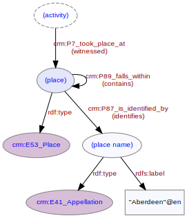

Place
A named location associated with some aspect of the investigative activities. For example report publication will usually name the place of publication (e.g. "Aberdeen"). An investigation takes place on a site (which is itself a named place) - the site will then fall within a broader named place (e.g. "Aberdeen"). A place may be known by more than one name, possibly in more than one language (e.g. "Cardiff"@en, "Caerdydd"@cy).

Fig. 1: Place with associated entities and properties | svg | png | pdf
{kind=link}
{kind=link}
@prefix rdfs: <http://www.w3.org/2000/01/rdf-schema#> .
@prefix crm: <http://www.cidoc-crm.org/cidoc-crm/> .
<http://tempuri/report/1/publication> a crm:E7_Activity ;
crm:P7_took_place_at <http://tempuri/place/1> .
<http://tempuri/place/1> a crm:E53_Place ;
crm:P7i_witnessed <http://tempuri/report/1/publication> ;
crm:P87_is_identified_by <http://tempuri/placename/1> .
<http://tempuri/placename/1> a crm:E41_Appellation;
rdfs:label "Aberdeen"@en .
Fig. 2: Turtle RDF example | raw | styled